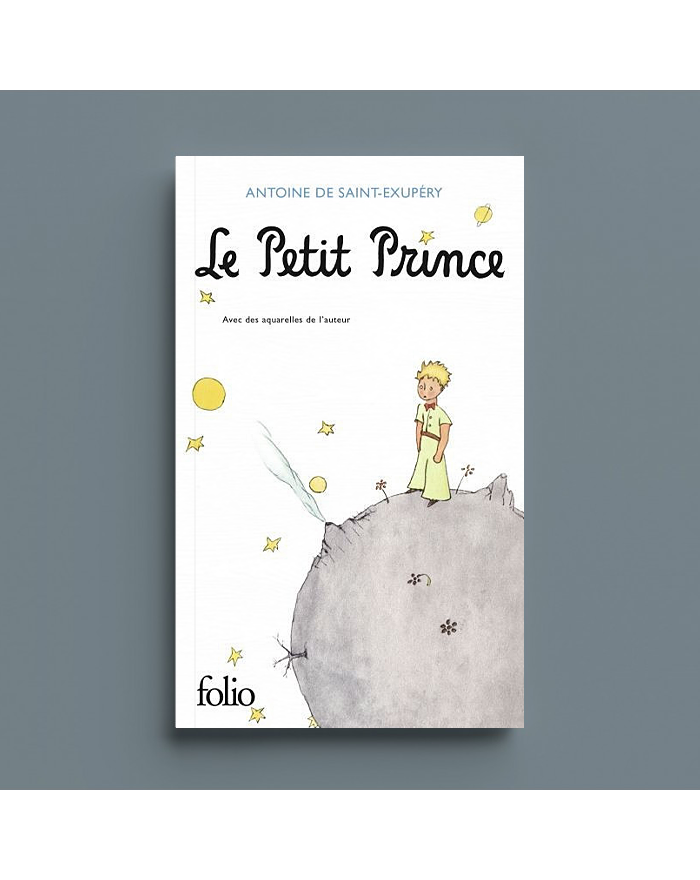

Top 3 Memes
Meilleur Groupe et Chanson
Ma Chanson préférée est celle d'Oumou Sangaré qui chante en Bambara, ma langue natale, les mérites du travail et la reussite.
Meilleur Livre
"Le Petit Prince” d’Antoine de Saint-Exupéry".
C’est un classique intemporel qui explore des thèmes profonds comme l’amitié, l’amour et la perte à travers les yeux d’un jeune prince voyageant de planète en planète.
Meilleur Film ou Série
Mon film préféré est sans nul doute "The woman king".
The Woman King est un film historique d’action qui raconte l’histoire des Agojie, une unité de guerrières protégeant le royaume africain de Dahomey au 19ème siècle.
SNK: Best Manga EVER !

"Attack on Titan" (SNK) se déroule dans un monde où l'humanité vit retranchée derrière d'immenses murs pour se protéger de mystérieux Titans. L'histoire suit un groupe de jeunes soldats déterminés à comprendre l'origine de ces créatures et à reconquérir leur liberté.